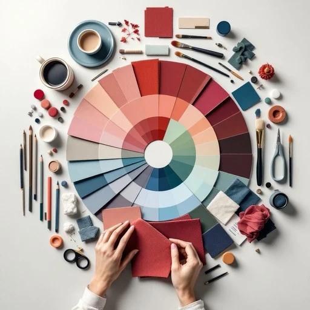
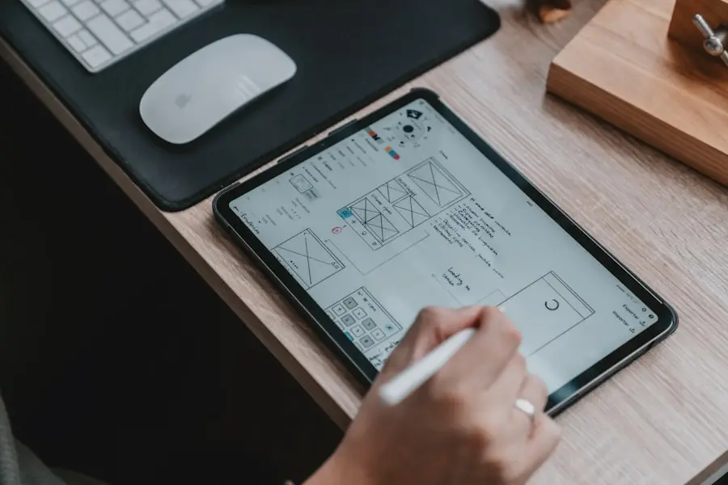

Portfolio — Recette Créative
"Le Design, c'est comme une recette que l'on suit au mieux, avec patience, détail, minutie, et un grain de folie. Pour faire ressortir le meilleur des saveurs."
— Note, 2026

📖
🖥️
👩🏻💼

Mise en place.Un approche pleine de curiosité et de volonté d'aller plus loin. Un mélange de connaissance et de découverte qui comme une recette se construit et se prépare avec minutie.
Phase I
Pour qui, avec qui, et avec quel objectif.
Phase II
Laisser mijoter, réduire et en ressortir une solution la plus claire et la plus adaptée possible.
Après quelques années en communication, et avec la découverte de nouveaux ingrédients, je développe de nouvelles techniques de réflexion pour mieux connecter impression et digital.